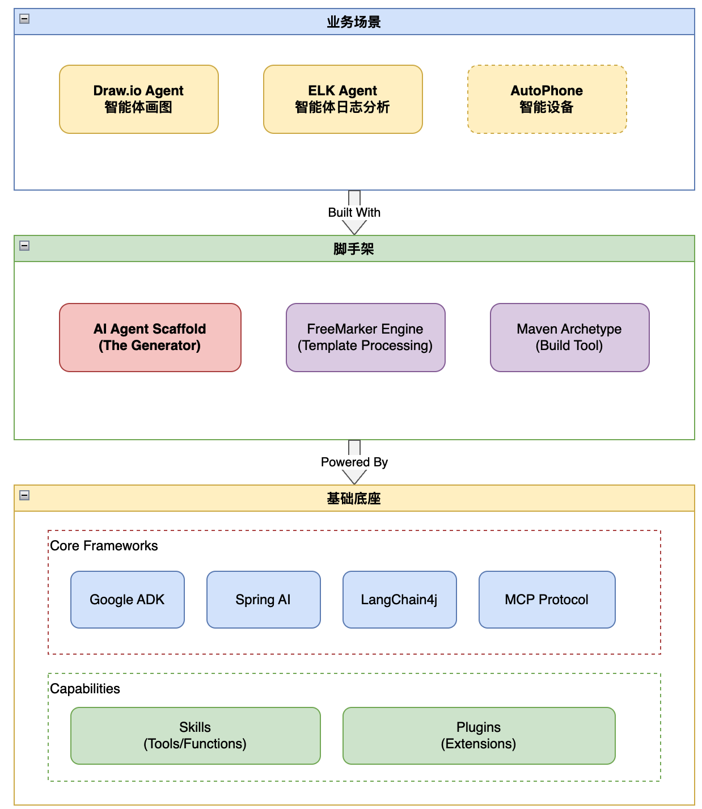
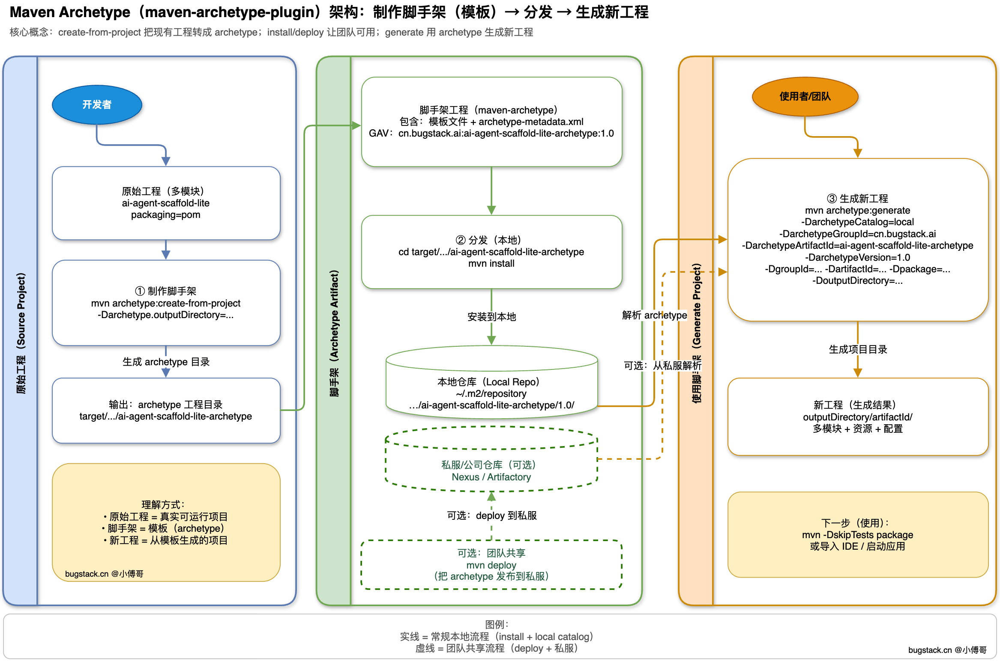
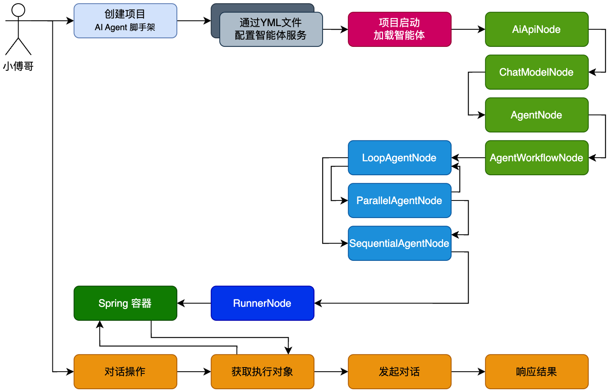
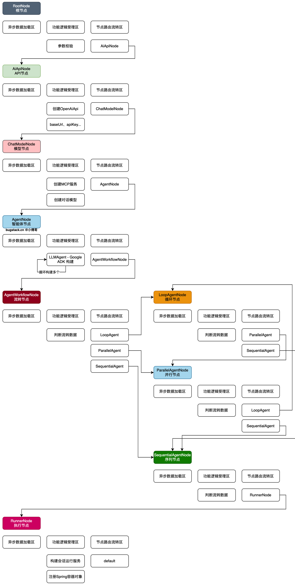
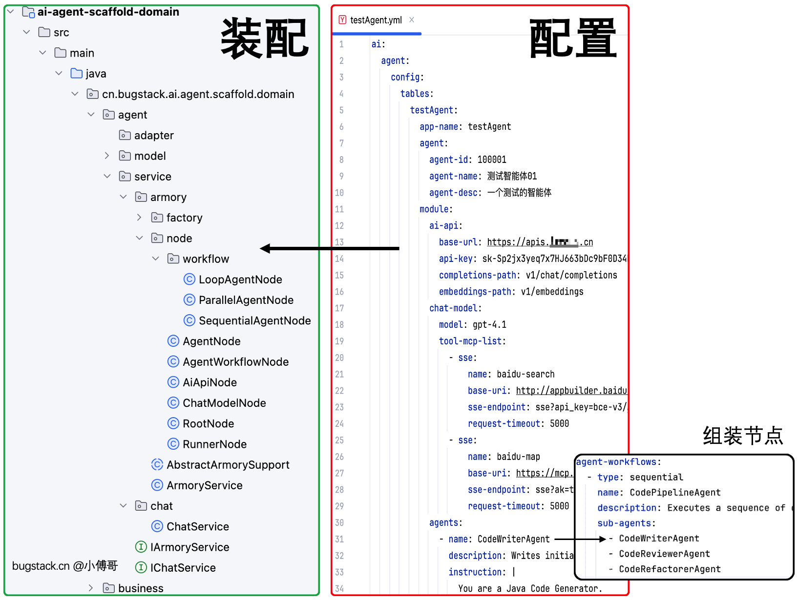

一、本章诉求
对 AI Agent 智能体脚手架，进行应用技术选型和工程框架设计。
这个过程就等同于大家做一个新项目时，分析项目实现过程，以及过程中所需的技术能力，并对未知的技术点进行案例验证。待全部梳理完成后，则进行详细的方案设计。
随着大家进入公司以后，在你承接一个新的项目/需求时，会大量的做这个事情，你会遇到很多没用过却需要使用的技术或者方案。当然，也会随着你的积累，你做这个事情会越来越熟练，越来越高效。
而与之相反的，如果你之前的学习总是对照视频cv代码，最好一次就成功运行，害怕出错，不敢排查，没有一个思考和验证的过程，那么其实是一点经验也没积累。所以，要正视自己的学习方法。
学习建议参考，这样的学习方式（任何一个项目都可以），可以让你很好的锻炼编程技术。
二、架构设计
如图，整体简要架构设计；

做这个事情，我们要思考，需要哪些东西来完成这样项目的开发。如下；
1. 基础基础
2. 脚手架
我们做的这个项目，是一个脚手架工程。别人可以基于命令或者配置的方式，快速构建出一个同类的项目。你可以理解为复制粘贴，但因为整个工程的项目名称、包名，都会调整，如果只是人工的复制粘贴，这个工作量也是很大的。所以，我们要提供一个脚手架，让使用的用户可以一键完成自己的智能体项目创建。

这里有 FreeMarker 方案，也有 maven-archetype-plugin 插件方案。 当然你还可以调研其他方案，一定要不断的激发自己的想法。
几个资料内容（也可以自己再检索），可以学习了解关于脚手架是什么，以及怎么使用。这里我们会选择 maven-archetype-plugin 插件方案，构建 AI Agent 智能体脚手架。
3. AI + AI Agent 框架
开发 AI 的方式有很多，做 AI Agent 智能体的方案也不少。如，AI 类的接口对接，可以自己实现 SDK（在星球「码农会锁」里就有），也可以使用 Spring AI、LangeChain4J 等框架。对于 AI Agent 智能体的工作流处理，也可以自己实现，还可以使用现成的组件 Google ADK 智能体框架。
这里建议大家尽量多检索一些方案，因为以后你工作或者面试，都可能问你为什么选择这个。检索后，可以总结发到项目作业下，一起讨论。这样可以让你学习到的更多。此外，你只要做了一套，其他的都不是问题，大同小异。以我个人举例，在我工作多年后，自己的一些编码方案，也会和 Spring、MyBatis 源码中的设计，有类似的方案和技巧。所以，非常建议大家，多扩展自己，别给自己设限，这个不好懂，那个不好学的学生思维。
这里，我们会选择 Spring AI + Google ADK 方式，因为 Spring AI 框架结合 Spring 本身，更有优势，背靠 Spring 发展也会更快。而 Agent 编排则选择 Google ADK，因为 Google 是非常强大的 AI 公司，它的更多思想都会最快的体现到自己实现的框架中，就像 a2a 协议，也是 Google 最早定义的。对于学习，我们需要倾向于这类公司所做的产品。
4. 模块编排
在整个 AI Agent 实现过程中，会有一整条流程链路的处理，包括；要把 AI 接口对接上，把使用的模型创建出来，再添加上 MCP 工具，之后在编排智能体工作流等。那么为了让这些流程可以被更好的管理和扩展，我们就不能直接通过一堆的 if ··· else 来做处理，而是要想办法通过设计模式，把行为逻辑规划到各个实现类中，并在类与类的调度中使用设计模式来衔接。
基于此诉求，这里需要引入决策树模型，也就是设计模式中的组合模式。你可以学习星球「码农会锁」扳手工程中的设计模式框架。之所以使用这样的框架，是因为这类的场景适用于使用更大型的如 Drools、EasyRule 等（你可以检索这些能力）等，而是需要一些更轻量，更适合编码操做的决策树模型。
文档：《通用技术组件 - 🔧扳手工程》第2节：责任链和规则树通用模型框架
5. 工程框架
采用 DDD 领域驱动设计 + 六边形架构进行系统开发。
因为 DDD 架构的四色建模方法可以更好的分析场景需求模型，同时它对应的六边形架构设计，非常合理的划分了微服务的各项单元功能。如；http、redis、mysql等都有自己的分层规划，同时又为领域服务与基础设施层的设计做了依赖倒置（这样的思想在Spring源码中很多），当我们在领域模块中实现服务时，就可以专心于各个模块的内聚服务了。在此架构上，我们可以划分出一个智能体模型的构建和使用服务，同时也可以留出其他领域，让用户实现自己的业务。
关于 DDD 可以在这部分补充学习；https://bugstack.cn/md/road-map/ddd-guide-00.html - 有系列的5节课程，详解讲解DDD架构（可以刷刷，后面咱们就要使用啦）。
三、详细设计
1. 流程设计

-
首先，以用户操作视角来看，通过 AI Agent 智能体脚手架，创建项目，之后通过 YML（可以多个） 文件配置自己的智能体服务，以及这个过程还可以开发自己的业务功能逻辑。
-
之后，项目进入启动，启动后会加载 YML 文件，完成 AI Agent 智能体的创建。并把智能体注入到 Spring 容器，方便后续对话使用。
-
然后，用户就可以进行对话操作了，对话的时候，会选择出对应的智能体 AI 进行请求服务。
2. YML 设计
YAML
ai:
agent:
config:
tables:
parallel_research_app:
app-name: ResearchAndSynthesisPipeline
agent:
agent-id: 100002
agent-name: 测试智能体02
agent-desc: 并行研究并汇总的智能体管道
module:
ai-api:
base-url: https://apis.itedus.cn
api-key: ${OPENAI_API_KEY}
completions-path: v1/chat/completions
embeddings-path: v1/embeddings
chat-model:
model: gpt-4.1
tool-mcp-list:
- sse:
name: baidu-search
base-uri: https://appbuilder.baidu.com/v2/ai_search/mcp/
sse-endpoint: sse?api_key=${BAIDU_AI_API_KEY}
request-timeout: 5000
agents:
- name: RenewableEnergyResearcher
description: Researches renewable energy sources.
instruction: |
You are an AI Research Assistant specializing in energy.
Research the latest advancements in 'renewable energy sources'.
Use the Google Search tool provided.
Summarize your key findings concisely (1-2 sentences).
Output *only* the summary.
output-key: renewable_energy_result
- name: EVResearcher
description: Researches electric vehicle technology.
instruction: |
You are an AI Research Assistant specializing in transportation.
Research the latest developments in 'electric vehicle technology'.
Use the Google Search tool provided.
Summarize your key findings concisely (1-2 sentences).
Output *only* the summary.
output-key: ev_technology_result
- name: CarbonCaptureResearcher
description: Researches carbon capture methods.
instruction: |
You are an AI Research Assistant specializing in climate solutions.
Research the current state of 'carbon capture methods'.
Use the Google Search tool provided.
Summarize your key findings concisely (1-2 sentences).
Output *only* the summary.
output-key: carbon_capture_result
- name: SynthesisAgent
description: Combines research findings into a structured report.
instruction: |
You are an AI Assistant responsible for combining research findings into a structured report.
Your primary task is to synthesize the following research summaries, clearly attributing findings to their source areas. Structure your response using headings for each topic. Ensure the report is coherent and integrates the key points smoothly.
**Crucially: Your entire response MUST be grounded *exclusively* on the information provided in the 'Input Summaries' below. Do NOT add any external knowledge, facts, or details not present in these specific summaries.**** Input Summaries:**
* **RenewableEnergy:**
{renewable_energy_result}
* **ElectricVehicles:**
{ev_technology_result}
* **CarbonCapture:**
{carbon_capture_result}
**OutputFormat:**
## Summary of Recent Sustainable Technology Advancements
### Renewable Energy Findings
(Based on RenewableEnergyResearcher's findings)
[Synthesize and elaborate *only* on the renewable energy input summary provided above.]
### Electric Vehicle Findings
(Based on EVResearcher's findings)
[Synthesize and elaborate *only* on the EV input summary provided above.]
### Carbon Capture Findings
(Based on CarbonCaptureResearcher's findings)
[Synthesize and elaborate *only* on the carbon capture input summary provided above.]
### Overall Conclusion
[Provide a brief (1-2 sentence) concluding statement that connects *only* the findings presented above.]
Output *only* the structured report following this format. Do not include introductory or concluding phrases outside this structure, and strictly adhere to using only the provided input summary content.
agent-workflows:
- type: parallel
name: ParallelWebResearchAgent
description: Runs multiple research agents in parallel to gather information.
sub-agents:
- RenewableEnergyResearcher
- EVResearcher
- CarbonCaptureResearcher
- type: sequential
name: ResearchAndSynthesisPipeline
description: Coordinates parallel research and synthesizes the results.
sub-agents:
- ParallelWebResearchAgent
- SynthesisAgent
刚开始没有接触过智能体，乍一看上面的配置，感觉会有点晕。没关系，后续会课程会逐步拆解来讲。你现在的角色，类似于一个研发，在跟着架构师的设计，进行学习，再到后面了解各个细节。
-
以上，是一个智能体构建过程中所需的配置属性，包括；ai-api、chat-model、agents、agent-workflows 的配置使用。不过现在你先不需要更细致的了解，只需要知道我们可以通过这样的 YML 文件，管理一个智能体的配置即可。上面的整个配置文件信息，也就是 Spring AI + Google ADK 构建智能体的硬编码过程，解耦为动态编码。
-
那么，这样做的目的是为了减轻一个业务智能体开发中复杂且重复的流程，设计为通用的可复用的构建流程。帮助用户快速完整自己的智能体服务开发。为什么，这里不选择开发成一个组件包吗？因为随着用户的深度结合业务，会有诉求进行细节的迭代，在智能体编排过程中还引入了更多的东西，所以以脚手架构建工程的方式提供给用户使用，是更为合适的。
3. 执行节点

-
首先，这是一个详细的智能体流程节点组装图，其中 AiApiNode、ChatModelNode，都是由 Spring AI 构建，之后进入 AgentNode、LoopAgentNode、ParallelAgentNode、SequentialNode、RunnerNode，都是由 Google ADK 构建。
-
注意，AgentWorkflowNode 是一个流转节点。因为一个 AI Agent 智能体的配置，可以是多种组合，如；
-
Sequential + Agent 01、 Agent 02、 Agent 03
-
Sequential + LoopAgent（Agent 01、 Agent 02）+ Agent 03，这种方式你可以理解为 Loop 是在循环的【分析、决策】直至拿到最终的结果（会设置最大执行步骤），之后在到 Agent 03
-
Sequential + ParallelAgentNode（Agent 01、 Agent 02）+ Agent 03，这种方式你可以理解为 Parallel 是在并行计算/执行/获取，某一类的数据，之后在汇总给 Agent 03 执行。
-
Sequential + Agent02 + LoopAgent（Agent 03、 Agent 04）+ ParallelAgentNode（Agent 07、 Agent 05） + Agent 06 + Agent 01，这种就是一个复杂的 Agent 装配过程了。
4. 工程样例

-
这一部分就是搭建工程所出来的效果，把用户配置的 YML 文件，通过程序进行加载到 Spring 容器，之后在使用 IChatService 进行会话操作。
-
另外，business 是留给用户开发自身业务流程使用。
-
Google ADK 智能体服务，还提供了一些插件、Function 自定义函数等，这些也会在后续的功能实现中，陆续迭代。
-
在脚手架开发完成后，我们还会基于脚手架做一些场景案例，给大家打开思路。让你也可以基于脚手架，开发自己的智能体服务。